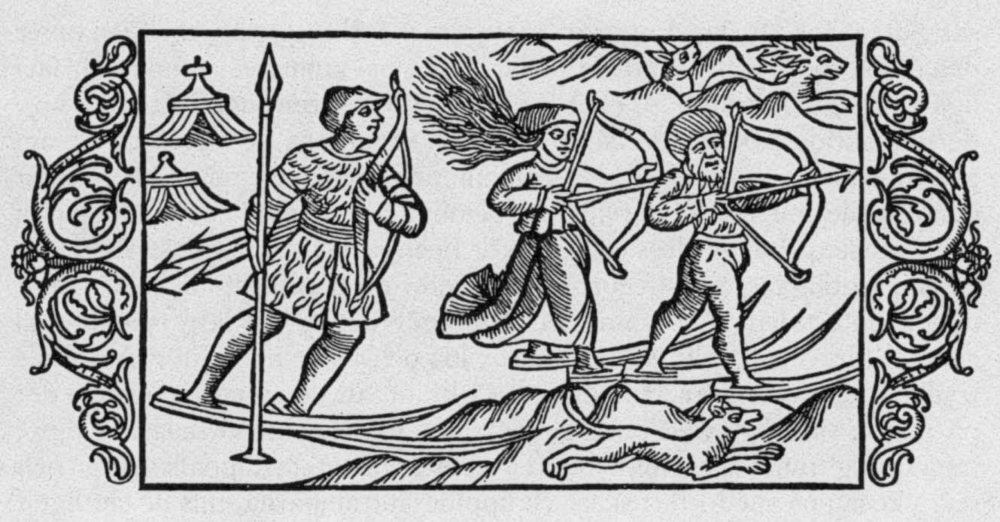

Sports
History
The he records and documents in the history of sports, have informations from 3000 years ago. The must old documentation about sports gives reference of sport as a preparation and training for war or hunting. Hence there were sports that involved the throwing of Spears, stakes, rocks and play-fighting.
To the history, the first Olympic games was organized aboud 776 BC. And was dedicated to the Olympian Gods. They had played the games until 393 AD. When the Emperor Theodosius decreed that all "pagan cults" have to be banned.
After many years without the Olympic games, a group of business people had decided to reorganize the Olympic games that had the first year on 6 April 1896.
Since the first year of the modern Olympic games, the organization had sorted many countries to be host of the games.
On this web site we can find on the web page "Sports", a list of the known categories of sports. And on the web page "News", a sample of the news of five continents. Each sample shows the main sports that the population is interested.

Extra information:Web site administratorMap of the web site References © 2016 All Rights Reserved |